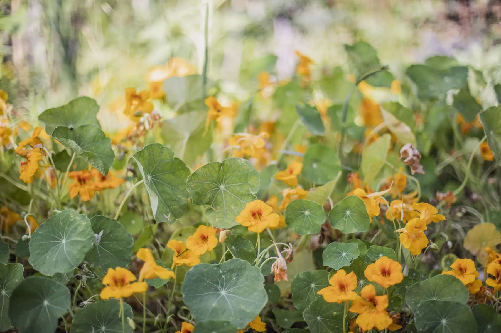

אדמתי / הקמת גינות / גינה ים־תיכונית
גינה ים־תיכונית וצמחייה מקומיתחלקת טבע ים־תיכונית, בפתח הבית
גינה שבנויה מצמחים שגדלים כאן מעצמם: חרוב, אלה, מרווה, קורנית ורקפת. חוסכת מים, מושכת ציפורים ודבורים, ומשתנה עם העונות.

ארבעה עצי פרי, שיחי תבלין ופריחה על מצע טוף, ברצועה הצרה שבכניסה.

למה ים־תיכונית?
כי היא מכירה את המקום טוב יותר מכל גינה אחרת.
מים
אחרי שנה־שנתיים של התבססות, צמחייה מקומית צריכה הרבה פחות השקיה.
אדמה
אבן כורכר, טוף וחיפוי אורגני שומרים לחות ומזינים את הקרקע.
חיים
דבורים, פרפרים וציפורים שמוצאים בגינה מזון ומחסה.
עונות
רקפת בחורף, מרווה באביב, קורנית בקיץ. הגינה לא נראית אותו דבר פעמיים.
הצמחים שאנחנו אוהבים
שמונה צמחים שחוזרים כמעט בכל גינה שלנו. צילומים מאיתי
החדרים של הגינה
גינה ים־תיכונית היא לא רק רשימת צמחים. היא בנויה מ״חדרים״: פינת ישיבה בצל זית, שולחן תחת גפן, טרסה של אבן מקומית, שביל שמריח רוזמרין.

אבני מדרך טבעיות במלט לבן, בזוויות שמנקזות את מי הגשם.
רוצים גינה כזאת?
ספרו לנו מה יש לכם היום, חצר, מרפסת או רצועה בכניסה, ומה הייתם רוצים שיהיה שם. נחזור אליכם כדי לתאם פגישת היכרות בשטח.